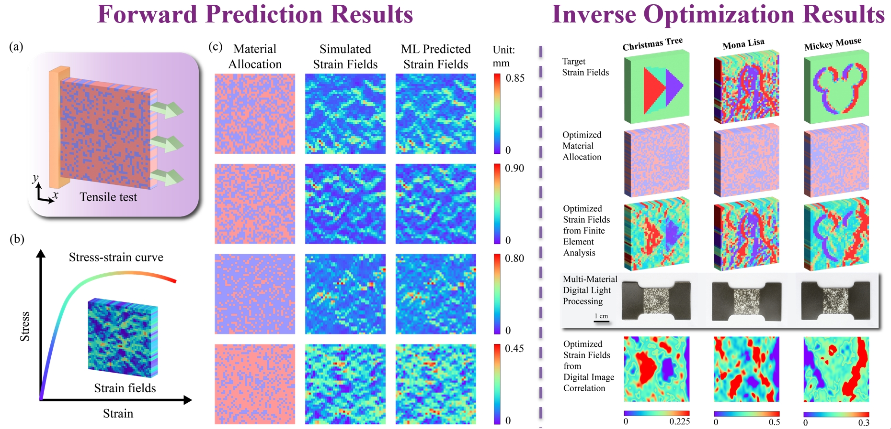

AI-Driven Inverse Design
Inverse design of strain fields
- Problem
- Manual exploration of hierarchical material layouts is slow and combinatorial.
- Approach
- RNN surrogate modeling paired with evolutionary optimization.
- Outcome
- Target strain patterns translated into architectures and compared across prediction, simulation, and experiments.